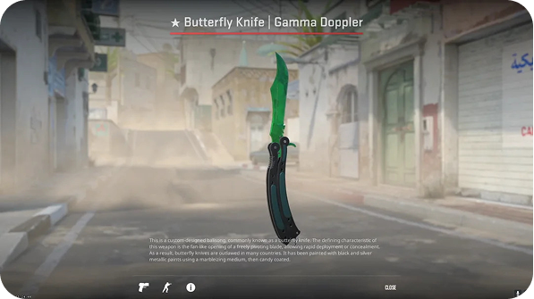
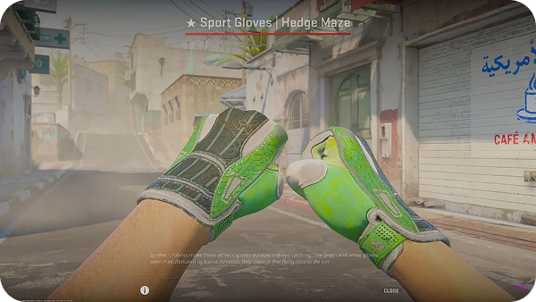
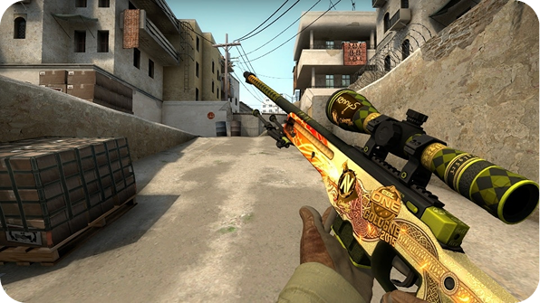
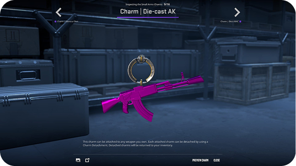

Skins
Les skins prennent une place trés importante dans l'écosystème de Counter strike et même des jeux en général, trés apprecier de la communauté, ils permettent de modifié l'apparence de nos équipement a nos goûts et couleurs! Voici une sélections de mes skins préferé!

Couteau Papillon - Gamma Doppler
Ses derniers dispose de "pattern" qui les differencies
les uns des autre dans ce cas la c'est un "émeraude" la lame est complètement verte, ceci joue énormement sur le prix et la rareté!

Gant de sport - Hedge Maze
Ils peuvent aussi etre endommagé, et meme dans certains cas quasiment méconnaissable! Attention a l'inverse d'autre se révèle une fois abimé!

AWP - Dragon Lore
Il existe aussi des stickers a l'éfigie de joueurs ou d'équipe ayant participé au tournois Major, que l'ont peut apposé sur l'armes afin de la rendre unique!

Charms
En plus des stickers, il y a également les charms, petit porte a fixer sur les armes, une manières simple de personnalisé son équipement!